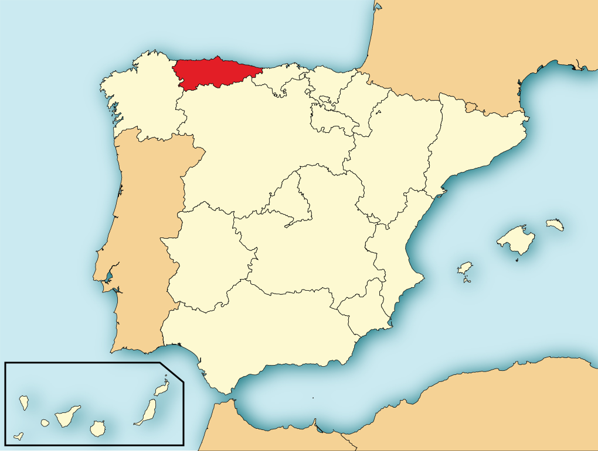
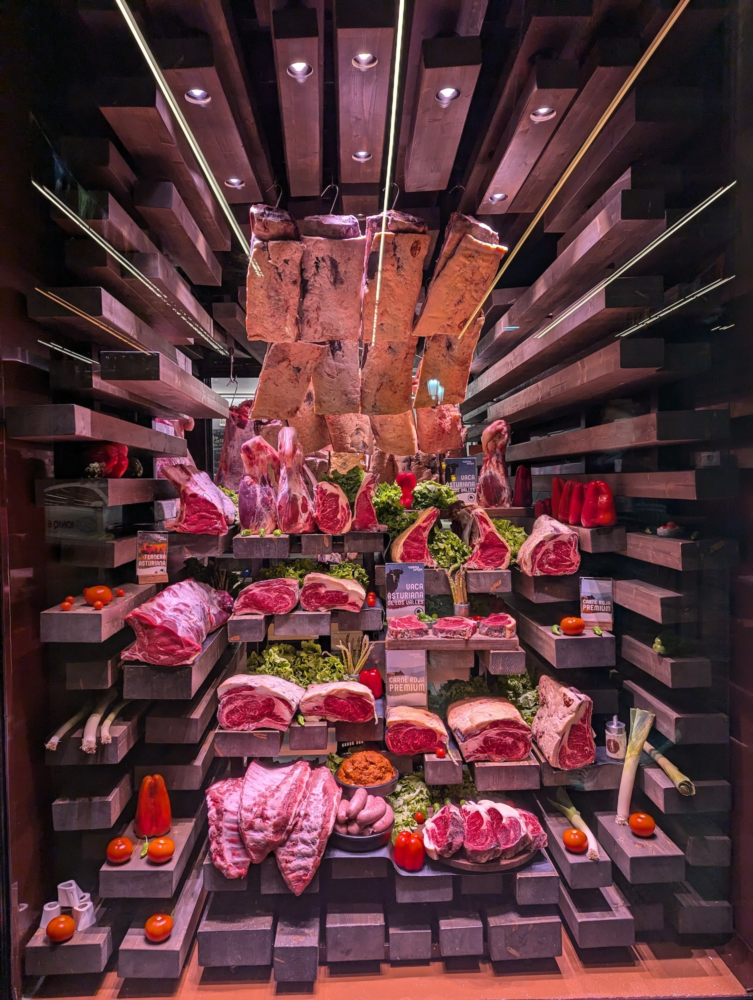
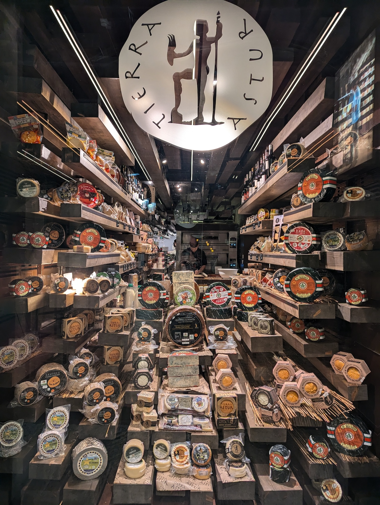

オビエドについて
Monday, 02 December 20242週間前オビエドに出張しました。理由は今会社と共同している会社の本社が、オビエドにあります。オビエドはスペイン北側のアストゥリアス州の中で、小さな町です。私の町と似てます。
火曜日にこの会社が素晴らしいレストランに私たちを連れていって、ごちそうしてくれました。このレストランの名物はりんご酒です。水曜日にたくさん会議があったので、少しだけ飲みました。
水曜日と木曜日は忙しくて、あまり自由な時間がなかった。しかし、夕方に同僚と一緒に遊びました。仕事の後、バルに行って、晩ご飯を食べました。
もうオビエドに行くかは知らないが、次回は家族を連れていきたくて、アストゥリアス州を観光したい。
アストゥリアス州： 
この写真はレストラン玄関です：  